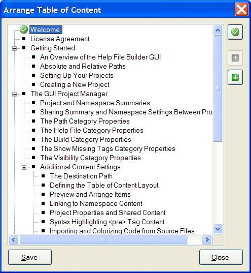

Preview and Arrange Items
While you can add the tags to each file manually, the easiest way to define
the table of content order and set the default topic is through the Preview
and Arrange option on the Content Editor dialog box.

The preview dialog box will present you with a representation of the
table of content based on the currently defined additional content items.
The designer will use the current project folder as the base path for
resolving relative paths to the content item files. You can then move
items up and down within their group to set their appearance order and also
set the default topic for the help file. The default topic option acts as
a toggle. Click it once on an item to set it as the default. Clicking it
again on the same item turns it off and no item will be selected as the
default topic. In such cases, the root namespaces page will be the default
topic for the help file. When you click the Save button, the
appropriate tags are added and/or removed from each file as needed.